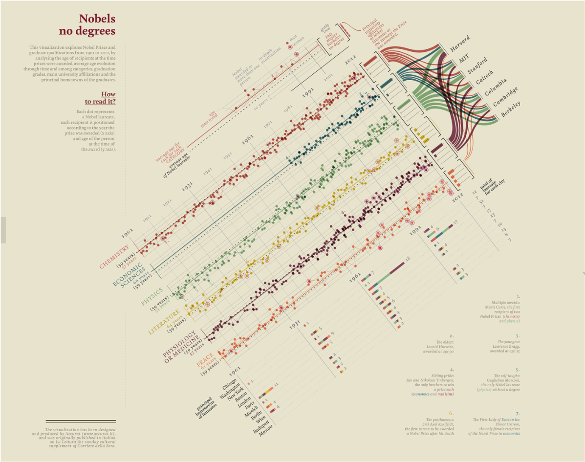
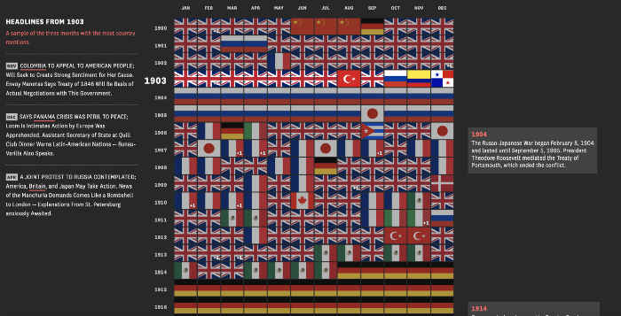
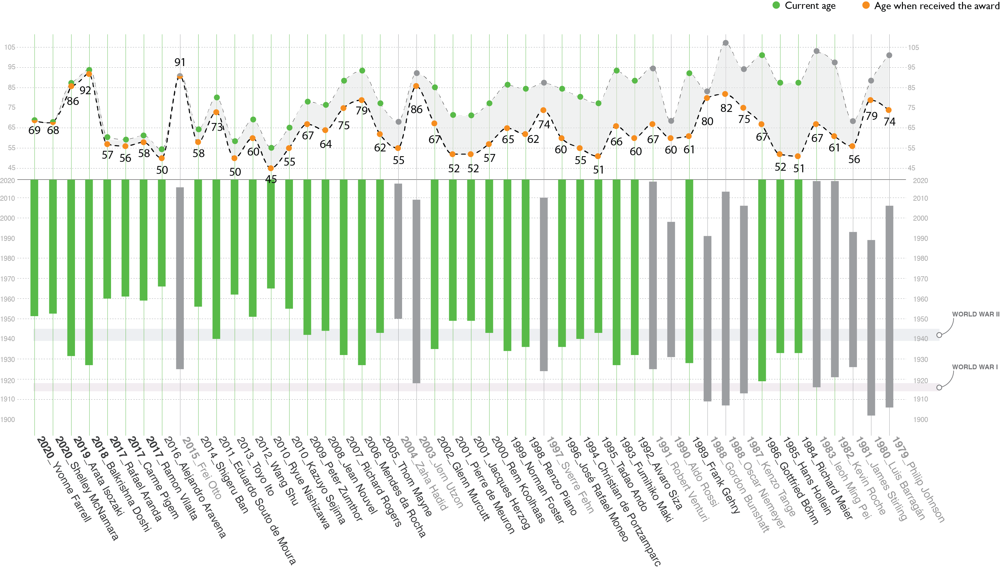

PROJECT DEMO
Nobels no degrees
The infographic created by Giorgia Lupi, Nobels no degrees, is my initial motivation to do this project. It is one of the most elegant infographics I’d ever seen, which is literally art. However, essencially, the primary focus of Nobels no degrees is the Nobel Prize not the laureates. Readers have no idea who are these laureates, what kind of life they had lived. I want to do a project with a similar topic but focus on the stories of the people behind.
The World through the Eyes of the US
The World through the Eyes of the US is an interactive data visualization project on The Pudding. The way it presents information with different levels of detail gave me a deep impression. I case-studied this project and documented it in my journal. When I began thinking about how to present data in People Who Won the Pritzker Architecture Prize, I unconsciously adopted a similar way of showing information and organizing readers’ behaviors.
Before decided any topics, I made a prototype in Adobe Illustrator to show the pattern in the “ages” when these laureates received the award (which is definitely one of the topics I want to visualize). It is the starting point of the whole project.
PINPOINT TOPICS
The contents of this project consist of sixteen topics, which are based on my personal experience and knowledge about:
-
the facts that architects are interested
- the facts that the public might be interested
The sixteen topics were finally grouped into “LIFE”, “EDUCATION”, and “CAREER”, three categories.

PROJECT ENVISION
Information Hierarchy & Layout

Interaction Design

IMPLEMENTATION
I did the prototype using d3.js from the very beginning. As a novice d3 developer, the project’s form and content were limited by my proficiency in programming to a great extent. Therefore, after I became more familiar with Javascript, I added more content (there were only five topics in the original project) and visually polished it.
A topic about "sound"
One more topic in the “CAREER ” in the original design was the first sentence of each architect’s speech in the award ceremony. This topic is actually very important for the project. On the one hand, I found a trend of speaking the laureates’ first language instead of English in recent years. On the other hand, I believe that listening to these architects’ voice would really bring the project to life.
While most laureates started the speech by greeting the host and audiences, some said something very different. As the laureate of 2016, Alejandro Aravena, his first sentence was “this is going to be very tough.” Because the laureate of 2004, Zaha Hadid, passed away just a week before the award ceremony, who greatly influenced him. The project doesn’t need to include information like this. To encourage readers to explore more behind the scene, showing one such sentence is enough.
Limitation & Concerns
-
Technical Feasibility: after I learned React.js, I realized that it would be a much better practice to code this project with React. The current structure of the scripts is hard to make future development effective.
-
Responsive Design: this project doesn’t have a mobile version at this point. It works fine for tablets, but not the screen with a smaller size. The mobile version might need a new design of the layout, interaction, and new technology.
Next Step
-
Add the voice of the laureates in the project.
-
Design and develop the mobile version.